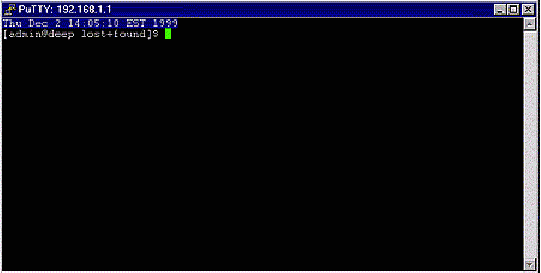

Часть VI Приложения
В этой частиПриложение A Советы,
рекомендации и задачи администрирования
Приложение B Requests
for Comments (RFC), связанные с информацией приведенной в книге.
Некоторые советы в этом разделе специфичны для Linux систем..
Большинство подходит для всех UNIX систем.
1.0 Утилита "du"
Вы можете использовать утилиту "du" для оценки дискового
пространства, занимаемого файлами. Например, чтобы определить размер в
мегабайтах каталогов "/var/log/" и "/home/" используйте команду:
[root@deep /]# du -sh /var/log /home
3.5M /var/log
350M /home
Запомните, что вышеприведенная команда покажет текущий размер
ваших данных. Сейчас, например, вы узнали, что "/home" занимает 350M, теперь вы
можете перейти внутрь его и определить, где расположены самые большие
файлы.
[root@deep /]# cd /home/
[root@deep /home]# du -sh *
343M admin
11k ftp
6.8M httpd
12k lost+found
6.0k named
6.0k smbclient
6.0k test
8.0k www
ЗАМЕЧАНИЕ. Вы можете добавить эту команду в ваш crontab,
чтобы получать отчеты об использовании дискового пространства по
почте.
1.1 Поиск маршрута по которому пакеты пересылаются с вашего
компьютера на удаленный.
Если вы хотите найти маршрут по которому пакет следует межде
вашим и удаленным компьютером, просто используйте следующую команду:
[root@deep /]# traceroute www.redhat.com
traceroute to www.portal.redhat.com (206.132.41.202), 30 hops max, 38 byte packets
1 ppp005.108-253-207.mtl.mt.videotron.net (207.253.108.5) 98.584 ms 1519.806 ms 109.911 ms
2 fa5-1-0.rb02-piex.videotron.net (207.96.135.1) 149.888 ms 89.830 ms 109.914 ms
3 ia-tlpt-bb01-fec1.videotron.net (207.253.253.53) 149.896 ms 99.873 ms 139.930 ms
4 ia-cduc-bb02-ge2-0.videotron.net (207.253.253.61) 99.897 ms 169.863 ms 329.926 ms
5 if-4-1.core1.Montreal.Teleglobe.net (207.45.204.5) 409.895 ms 1469.882 ms 109.902 ms
6 if-1-1.core1.NewYork.Teleglobe.net (207.45.223.109) 189.920 ms 139.852 ms 109.939 ms
7 206.132.150.133 (206.132.150.133) 99.902 ms 99.724 ms 119.914 ms
8 pos1-0-2488M.wr2.CLE1.gblx.net (206.132.111.89) 189.899 ms 129.873 ms 129.934 ms
9 pos8-0-2488m.wr2.kcy1.globalcenter.net (206.132.111.82) 169.890 ms 179.884 ms 169.933 ms
10 206.132.114.77 (206.132.114.77) 199.890 ms 179.771 ms 169.928 ms
11 pos8-0-2488M.wr2.SFO1.gblx.net (206.132.110.110) 159.909 ms 199.959 ms 179.837 ms
12 pos1-0-2488M.cr1.SNV2.gblx.net (208.48.118.118) 179.885 ms 309.855 ms 299.937 ms
13 pos0-0-0-155M.hr2.SNV2.gblx.net (206.132.151.46) 329.905 ms 179.843 ms 169.936 ms
14 206.132.41.202 (206.132.41.202) 2229.906 ms 199.752 ms 309.927 ms
где <www.redhat.com> имя или ip адрес удаленного
хоста.
1.2 Выводить на экран сколько раз обращались к вашему Веб
серверу:
Чтобы быстро вывести число обращений к вашему веб серверу
используйте следующую команду:
[root@deep /]#
grep "GET / HTTP" /var/log/httpd/access_log | wc -l
467
1.3
Одновременная остановка большинства сервисов.
Как root вы можете остановить несколько сервисов одновременно
следующей командой:
[root@deep /]# killall httpd
smbd nmbd slapd named
Вышеприведенная команда остановит Apache сервер, Samba сервис,
LDAP сервер и DNS сервер соответственно.
1.4 Хотите чтобы у всех
пользователей на верху терминала выводились часы?
Редактируйте файл profile (vi /etc/profile) и добавьте
следующую строку:
PROMPT_COMMAND='echo -ne
"\0337\033[2;999r\033[1;1H\033[00;44m\033[K"`date`"\033[00m\0338"'
Результат будет выглядеть так:

1.5 Инсталлирована ли
"lsof" на вашем сервере?
Если нет, то инсталлируйте ее и выполните команду "lsof -i". Вы
должны получить список портов, которые открыты на вашей машине. Программа lsof
полезная утилита, которая говорит какие процессы слушают на каком
порту.
[root@deep /]# lsof -i
COMMAND PID USER FD TYPE DEVICE SIZE NODE NAME
Inetd 344 root 4u IPv4 327 TCP *:ssh (LISTEN)
sendmail 389 root 4u IPv4 387 TCP *:smtp (LISTEN)
smbd 450 root 5u IPv4 452 TCP deep.openna.com:netbios-ssn (LISTEN)
nmbd 461 root 5u IPv4 463 UDP *:netbios-ns
nmbd 461 root 6u IPv4 465 UDP *:netbios-dgm
nmbd 461 root 8u IPv4 468 UDP deep.openna.com:netbios-ns
nmbd 461 root 9u IPv4 470 UDP deep.openna.com:netbios-dgm
named 2599 root 4u IPv4 3095 UDP *:32771
named 2599 root 20u IPv4 3091 UDP localhost.localdomain:domain
named 2599 root 21u IPv4 3092 TCP localhost.localdomain:domain (LISTEN)
named 2599 root 22u IPv4 3093 UDP deep.openna.com:domain
named 2599 root 23u IPv4 3094 TCP deep.openna.com:domain (LISTEN)
1.6 Запуск команд на удаленном сервере без подключения к
нему через протокол ssh
Команда ssh также используется для выполнения команд на
удаленной системе без подключения к ней. Результаты выполнения команды выводятся
на дисплей и контроль возвращается на локальную систему. Здесь приведен пример,
который выводит всех пользователей подключенных к системе.
[admin@deep /]$ ssh mail.openna.com who
[email protected]'s password:
root tty1 Dec 2 14:45
admin tty2 Dec 2 14:45
wahib pts/0 Dec 2 11:38
1.7 Завершение имени
файла
Табулирование окончания имени файла позволяет вам вводить
только часть имени. Введите начало имени файла и нажмите [TAB], имя будет
завершено за вас. Если больше чем один файл или программа подходят, то раздастся
звуковой сигнал и затем после повторного нажатия [TAB] вы получите список
подходящих имен.
1.8 Специальные символы
Вы можете быстро выполнить задачи, которые мы часто делаете,
используя "быстрые клавиши" - одну или больше клавиш, нажатие которых на
клавиатуре выполняет задачу. Например, специальные символы могут быть
использованы в вашем командной оболочке следующим образом:
Control-d : Если вы находитесь в командном
интерпретаторе и нажмете control- d, то вы отключитесь от системы (logged
off).
Control-l: Если вы находитесь в командном интерпретаторе
и нажмете control-l, то вы очистите экран.
? : Это групповой символ. Он выступает как единичный
символ. Если вы зададите в командной строке что-то подобное "m?b", то Linux
найдет mob, mib, mub и любые другие буквы/цифры между a-z, 0-9.
* : Этот символ выступает как любые другие символы. Если
вы зададите "mi*", то будет использоваться "mit", mim, miiii, miya и все другие
слова, начинающиеся с "mi". "m*l" соответствует mill, mull, ml и всему, что
начинается с "m" и заканчивается на "l".
[] - Определяет диапазон. Если я запрашиваю m[o,u,i]m,
то Linux определяет: mim, mum, mom, если я задаю: m[a-d]m, то это соответствует:
mam, mbm, mcm, mdm. Символы [], ? и * обычно используются при копировании,
удалении и просмотре каталогов.
ЗАМЕЧАНИЕ. В Linux все зависит от регистра символов.
Из-за этого "Bill" и "bill" это не одно и тоже. Это позволяет хранить в одно
месте разные файлы с именами "Bill" "bill" "bIll" "biLl" и т.д. Так, при работе
с [], вы должны определить заглавные буквы если в любом файле они могут
использоваться.